Mayorista 2020NUEVO PROYECTO
estudioideamos.github.io
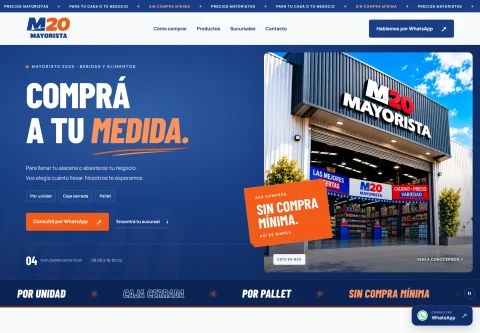
Sitio comercial de un mayorista de bebidas y alimentos. Explica las modalidades de compra, presenta productos y sucursales y facilita las consultas por WhatsApp.
Sitio corporativo
GLIX ERPNUEVO PROYECTO
IDEAMOS® · DISEÑO DIGITALSitio comercial que presenta una solución ERP para empresas. Explica los módulos de transporte, proveedores, recursos humanos y ventas móviles, y orienta al visitante hacia una consulta de asesoramiento.
Sitio corporativo
Sphere DesignNUEVO PROYECTO
estudioideamos.github.io
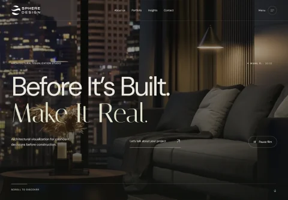
Sitio de un estudio de visualización arquitectónica de Miami. Presenta renders, películas y experiencias inmersivas mediante un portfolio visual y un recorrido editorial por sus servicios.
Sitio corporativo
Ideamos InternacionalNUEVO PROYECTO
estudioideamos.com
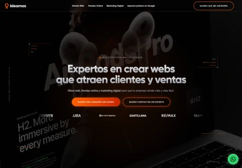
Versión internacional de la presencia digital de Ideamos. Presenta los servicios del estudio y una selección de trabajos para acercar nuestra propuesta a clientes de otros mercados.
Sitio corporativo
AquapuelNUEVO PROYECTO
ideamosestudio.github.io
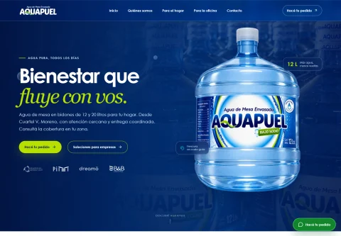
Sitio institucional para una empresa de agua en bidones. Presenta formatos, procesos de tratamiento y soluciones para hogares y oficinas, con accesos directos para consultar y coordinar pedidos.
Sitio corporativo
Psicoterapia P&PSITIO CORPORATIVO
psicoterapiapyp.com
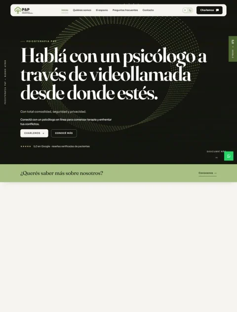
Sitio de un equipo de psicoterapia online en español. Presenta profesionales y servicios, responde consultas frecuentes y facilita el contacto de personas que buscan acompañamiento psicológico.
Sitio corporativo
SupercoffeeSITIO CORPORATIVO
estudioideamos.github.io
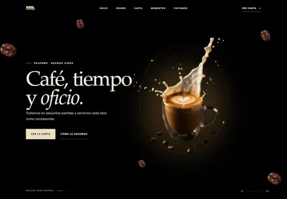
Experiencia de marca para una cafetería de especialidad. Combina una presentación editorial del café con su origen, carta y momentos de consumo, invitando a conocer el local.
Sitio corporativo
ExelsiaAPP / SOLUCIÓN DIGITAL
exelsia-sistema.vercel.app
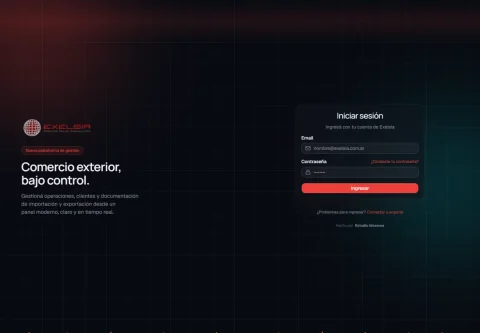
Plataforma de operaciones de comercio exterior. Su propuesta reúne clientes, operaciones y documentación en un panel de gestión con acceso mediante cuenta de usuario.
App / solución digital
Byte ConectividadSITIO CORPORATIVO
estudioideamos.github.io
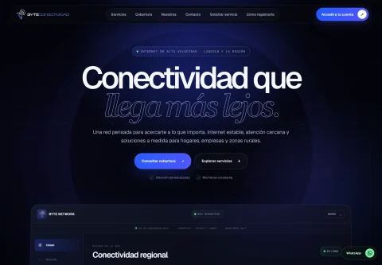
Sitio de un proveedor de internet regional. Organiza sus servicios y cobertura para hogares y empresas, presenta la compañía y facilita consultas sobre conexión y atención al cliente.
Sitio corporativo
Gravedad StoreTIENDA ONLINE
Diseño de interfaz
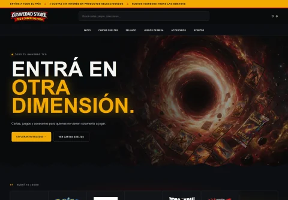
Tienda especializada en cartas coleccionables, juegos de mesa y accesorios. El desarrollo integra catálogo, fichas de producto, favoritos, carrito y proceso de compra sobre WordPress y WooCommerce.
Tienda online
Dra. Vanesa KlimaszewskiSITIO CORPORATIVO
doctoravanesaklima.com.ar
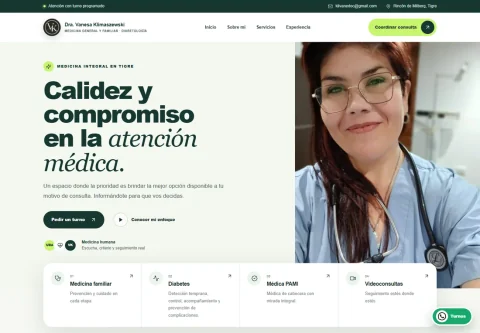
Sitio profesional de una médica de familia y diabetóloga. Reúne su trayectoria, servicios y enfoque de atención, con accesos para coordinar una consulta.
Sitio corporativo
Textil MaguimelNUEVO PROYECTO
textilmaguimel.com.ar
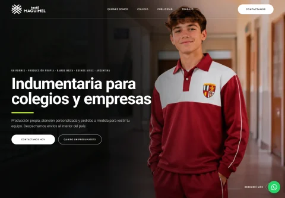
Web de una fábrica de uniformes escolares, prendas publicitarias e indumentaria de trabajo. Organiza sus líneas de producción y explica el proceso para solicitar prendas a medida.
Sitio corporativo
GAMA SeguridadSITIO CORPORATIVO
seguridadgama.com.ar
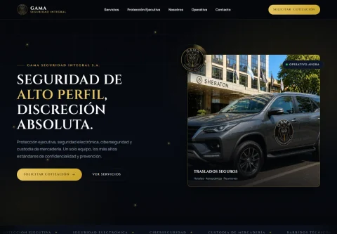
Web institucional de una empresa de seguridad integral. Presenta protección ejecutiva, seguridad electrónica y servicios de custodia con una comunicación orientada a consultas y cotizaciones.
Sitio corporativo
MR IngenieríaSITIO CORPORATIVO
mringenieriaestructural.com.ar
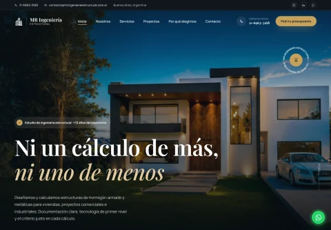
Web de un estudio de cálculo y diseño estructural. Presenta su especialidad, servicios y proyectos para que particulares y empresas puedan conocer su trabajo y solicitar un presupuesto.
Sitio corporativo
Ideamos InmobiliariasAPP / SOLUCIÓN DIGITAL
propiedades.ideamos.ar
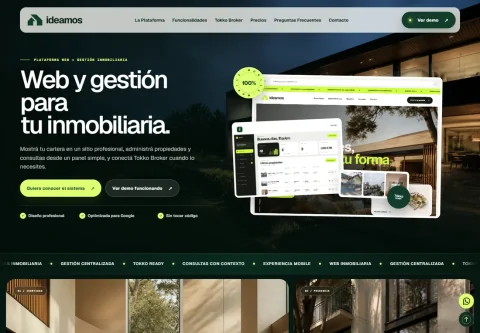
Plataforma que combina una web inmobiliaria y herramientas de gestión. Presenta administración de propiedades y consultas, junto con opciones de integración con Tokko Broker.
App / solución digital
Comunidad Sorda TandilSITIO CORPORATIVO
estudioideamos.github.io
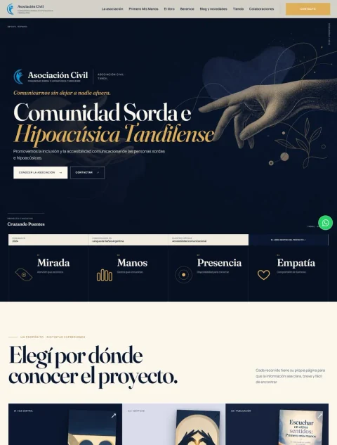
Sitio de la Comunidad Sorda e Hipoacúsica Tandilense y del proyecto de Berenice Cura. Organiza la asociación, sus iniciativas, el libro y las novedades para comunicar su trabajo de inclusión.
Sitio corporativo
Ideamos PropiedadesSITIO CORPORATIVO
estudioideamos.github.io
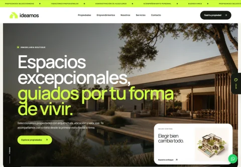
Demo de una web inmobiliaria con identidad editorial. Permite explorar una cartera de propiedades y buscar por tipo de operación y zona, junto con contenidos sobre servicios y tasaciones.
Sitio corporativo
VattenNUEVO PROYECTO
ideamosestudio.github.io
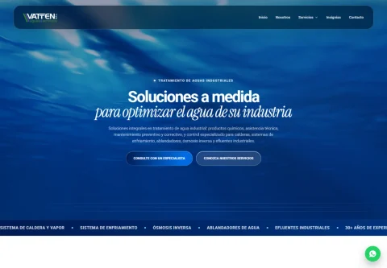
Sitio institucional de una empresa de tratamiento de aguas industriales. Presenta soluciones para calderas, enfriamiento, ósmosis y efluentes, con información técnica y contacto con especialistas.
Sitio corporativo
Stroma ServicesNUEVO PROYECTO
stromaservices.com
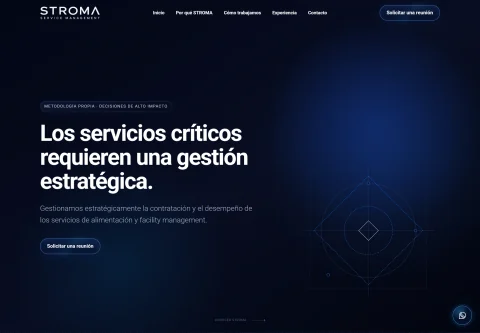
Sitio de una consultora especializada en la gestión estratégica de alimentación y facility management. Explica su metodología, experiencia y propuesta de valor para organizaciones que necesitan contratar y supervisar servicios críticos.
Sitio corporativo
Editorial ArgentaNUEVO PROYECTO
IDEAMOS® · DISEÑO DIGITALSitio y tienda online de Editorial Argenta. Reúne su catálogo de libros y autores, permite comprar obras y presenta los servicios para quienes quieren publicar su libro.
Tienda online
Grosz TrainingSITIO CORPORATIVO
estudioideamos.github.io
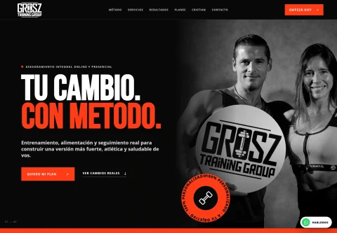
Sitio para un servicio de entrenamiento y nutrición personalizada. Explica el método de trabajo, presenta planes y resultados y facilita el primer contacto con el entrenador.
Sitio corporativo
KRK LatinoamericanaNUEVO PROYECTO
ideamosestudio.github.io
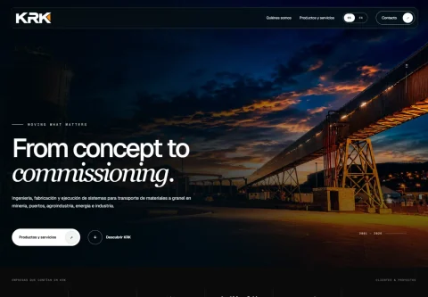
Sitio corporativo de una empresa de ingeniería para el manejo de materiales a granel. Presenta su experiencia, productos y servicios con contenidos en español e inglés.
Sitio corporativo
Ideamos ArgentinaNUEVO PROYECTO
ideamos.com.ar
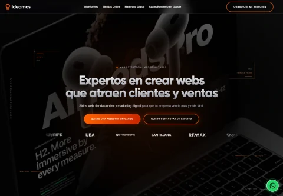
Sitio institucional de nuestro estudio. Reúne diseño web, ecommerce, posicionamiento y marketing digital con trabajos, testimonios y distintas vías de consulta para nuevos proyectos.
Sitio corporativo
Frosz × Gelato FitSITIO CORPORATIVO
frosz.com.ar
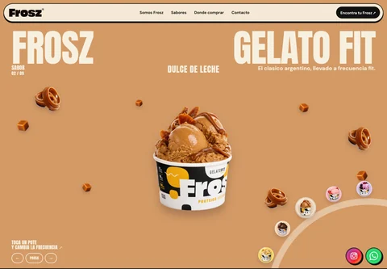
Experiencia de marca para una línea de gelato proteico. El sitio permite explorar sabores, conocer la propuesta de Frosz y encontrar dónde comprar, con una presentación visual dinámica del producto.
Sitio corporativo
Presupuestos IdeamosAPP / SOLUCIÓN DIGITAL
estudioideamos.github.io
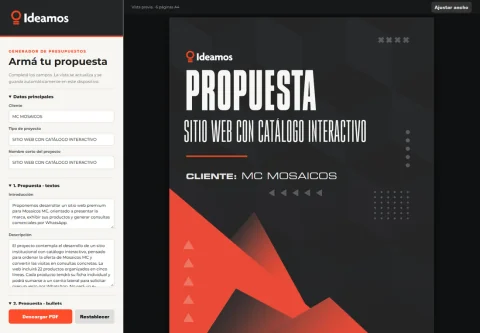
IDEAMOS® · DISEÑO DIGITALAplicación para preparar propuestas comerciales de Ideamos. Permite editar el alcance, las condiciones y los importes, ver el documento en tiempo real y descargarlo en PDF.
App / solución digital
HVAC PROFSITIO CORPORATIVO
IDEAMOS® · DISEÑO DIGITALSitio industrial de una empresa dedicada a fabricar y montar conductos de aire acondicionado y ventilación. Presenta productos, sistemas de unión y proyectos, con contacto para consultas técnicas.
Sitio corporativo
Mosaicos MCSITIO CORPORATIVO
IDEAMOS® · DISEÑO DIGITALCatálogo digital de una fábrica de mosaicos y revestimientos. Permite recorrer materiales, conocer aplicaciones y reunir productos de interés para solicitar asesoramiento comercial.
Sitio corporativo
Brief EcommerceAPP / SOLUCIÓN DIGITAL
IDEAMOS® · DISEÑO DIGITALFormulario de inicio para proyectos de tiendas online. Ordena la entrega de marca, catálogo, contenidos y definiciones comerciales mediante un recorrido de pasos con guardado de avance.
App / solución digital
Brief Google AdsAPP / SOLUCIÓN DIGITAL
IDEAMOS® · DISEÑO DIGITALFormulario guiado para organizar el inicio de una campaña de Google Ads. Reúne información del negocio, objetivos y público, y guarda el avance en el dispositivo mientras se completa.
App / solución digital
Ivess ReggieriAPP / SOLUCIÓN DIGITAL
IDEAMOS® · DISEÑO DIGITALCanal digital para clientes y nuevos interesados de Ivess Reggieri. Organiza pedidos, solicitudes de alta y atención comercial en un recorrido directo y adaptable al celular.
App / solución digital
29 Bis · CotizadorAPP / SOLUCIÓN DIGITAL
IDEAMOS® · DISEÑO DIGITALHerramienta para configurar y cotizar trabajos de impresión. El usuario elige papel, formato y cantidad, adjunta archivos y prepara su pedido con el cálculo de precio durante el recorrido.
App / solución digital
3D FactNUEVO PROYECTO
IDEAMOS® · DISEÑO DIGITALTienda online de equipos, insumos y soluciones para impresión 3D. Presenta impresoras, filamentos y accesorios, y acompaña a emprendedores y empresas en la elección de tecnología para prototipar y producir.
Tienda online
29 BisNUEVO PROYECTO
IDEAMOS® · DISEÑO DIGITALSitio y tienda online de un estudio de producción gráfica y diseño. Permite cotizar y encargar ploteos e impresiones, enviar archivos y descubrir productos de papelería, además de presentar sus servicios gráficos.
Tienda online
América Inexplorada TVNUEVO PROYECTO
IDEAMOS® · DISEÑO DIGITALSitio de un proyecto dedicado a producir contenidos documentales, ambientales y culturales para diferentes plataformas. Presenta el programa de la Asociación Cultural Los Ocho Cóndores, su enfoque y sus producciones audiovisuales.
Sitio corporativo
Módulo Arquitectura · GMCNUEVO PROYECTO
IDEAMOS® · DISEÑO DIGITALSitio corporativo de una empresa de arquitectura técnica en Uruguay. Presenta su experiencia en cubiertas, envolventes y fachadas, reúne proyectos arquitectónicos y publicaciones, y facilita el contacto para nuevas obras.
Sitio corporativo
El Pampa HogarNUEVO PROYECTO
elpampahogarmuebleria.com
IDEAMOS® · DISEÑO DIGITALTienda online de muebles, colchones y artículos para el hogar. Organiza el catálogo por ambientes y categorías, muestra los productos con sus precios y facilita la compra y las consultas de asesoramiento.
Tienda online
Bogan SukaldeakNUEVO PROYECTO
IDEAMOS® · DISEÑO DIGITALSitio corporativo de una empresa de Azpeitia dedicada al diseño, fabricación e instalación de cocinas, armarios y mobiliario a medida. Presenta sus servicios y proyectos, responde preguntas frecuentes y facilita el contacto para iniciar una propuesta personalizada.
Sitio corporativo
Trébol CaféTIENDA ONLINE
IDEAMOS® · DISEÑO DIGITALTienda online de café y equipamiento. La propuesta organiza productos para que el visitante pueda explorar la oferta y conocer las opciones de la marca en una experiencia de compra con identidad visual propia.
Tienda online
Raisa JoyasTIENDA ONLINE
IDEAMOS® · DISEÑO DIGITALTienda online de joyería y accesorios. El diseño pone las piezas en primer plano y organiza la colección para facilitar el descubrimiento de productos y la navegación del catálogo.
Tienda online
Mirta TulajTIENDA ONLINE
IDEAMOS® · DISEÑO DIGITALSitio y tienda de pelucas naturales, postizos y extensiones. Presenta los productos y servicios de la marca, con información para elegir una solución y contactar al equipo para recibir asesoramiento.
Tienda online
ONER VFXSITIO CORPORATIVO
IDEAMOS® · DISEÑO DIGITALPortfolio de un estudio de efectos visuales. Presenta proyectos y producciones mediante una experiencia centrada en imágenes, para mostrar el estilo y el trabajo del equipo.
Sitio corporativo
Product BadgesEXTENSIÓN WOOCOMMERCE · VISTA ILUSTRATIVA
WooCommerce / Ideamos
WOOCOMMERCEHacé destacar tus productos.✦Etiquetas de productoDiseñado por Ideamos
ideamos✦NOVEDADWooCommerce
Extensión de WooCommerce para administrar etiquetas visuales sobre los productos. Ayuda a destacar novedades, promociones u otras características dentro del catálogo de una tienda.
App / solución digital
Cuotas sin interésEXTENSIÓN WOOCOMMERCE · VISTA ILUSTRATIVA
WooCommerce / Ideamos
WOOCOMMERCEComprá en cuotas.3×Cuotas sin interésDiseñado por Ideamos
ideamos3×Sin interésWooCommerce
Extensión de WooCommerce desarrollada para mostrar y administrar opciones de cuotas sin interés. Permite comunicar las alternativas de pago dentro de la experiencia de compra de la tienda.
App / solución digitalNo encontramos ese proyecto. Probá con otro nombre o categoría.
 EN PRIMERA PERSONAVer testimonio
EN PRIMERA PERSONAVer testimonio